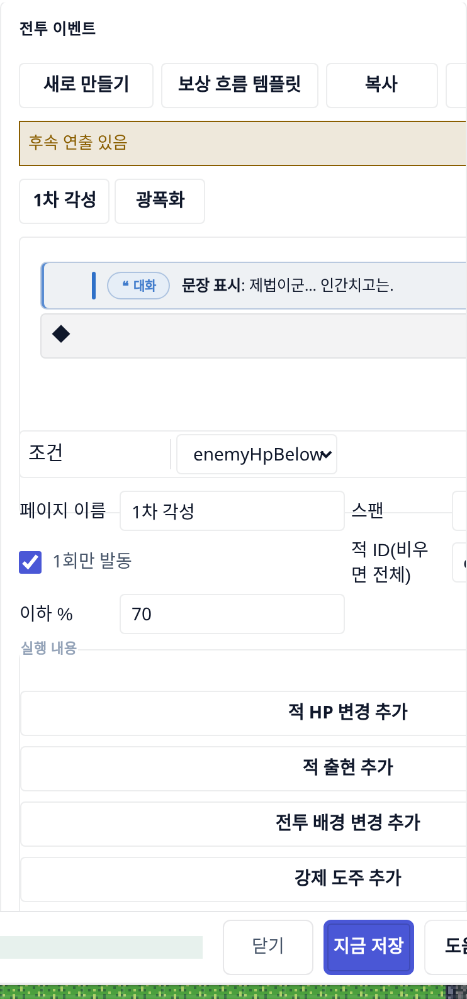
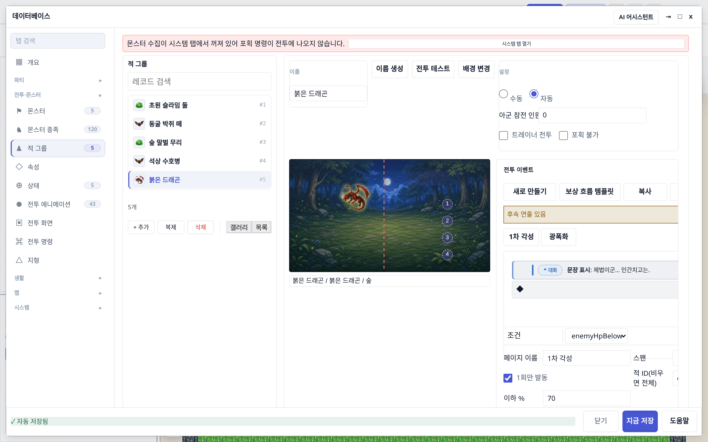
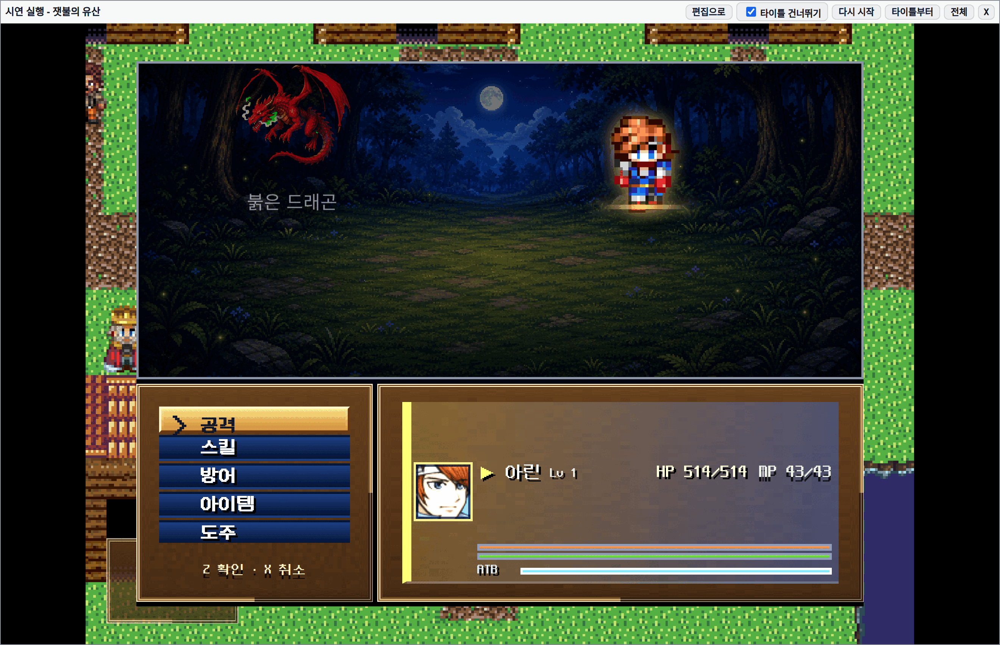
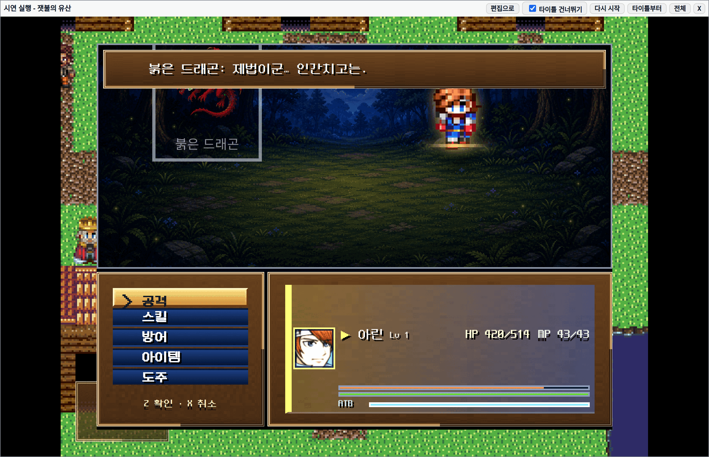
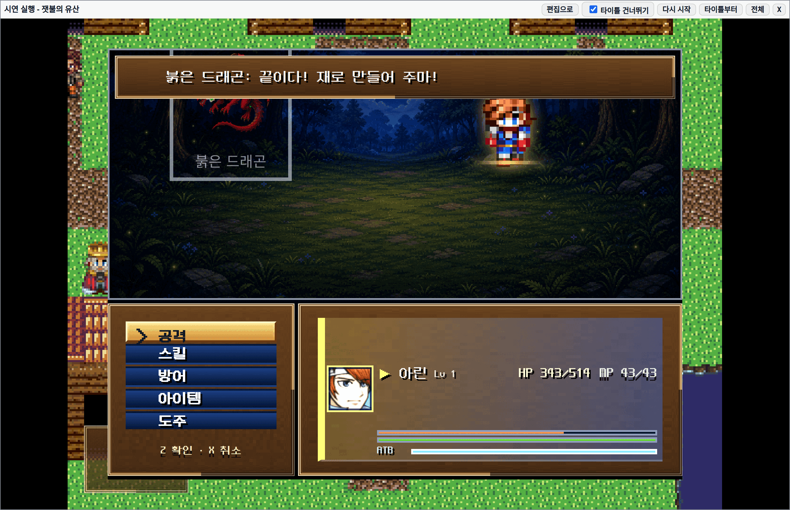
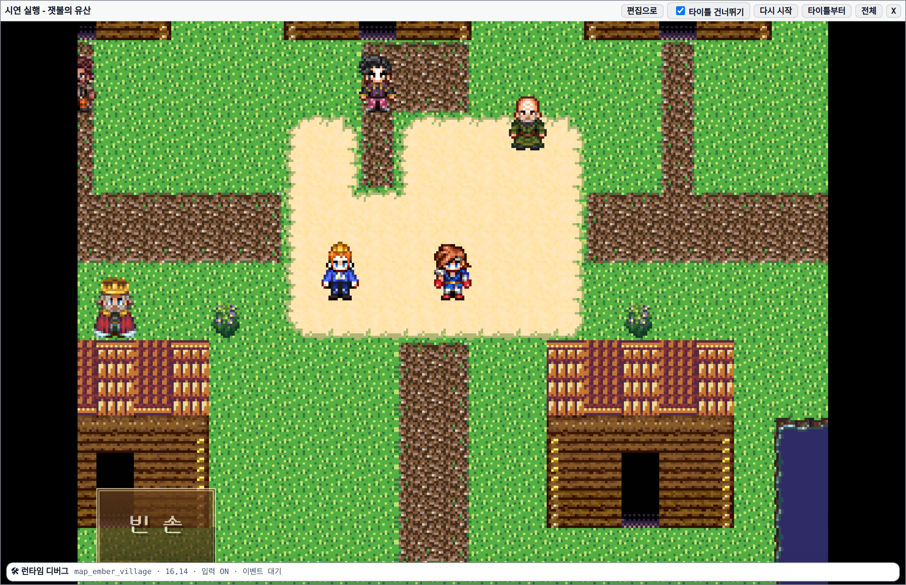
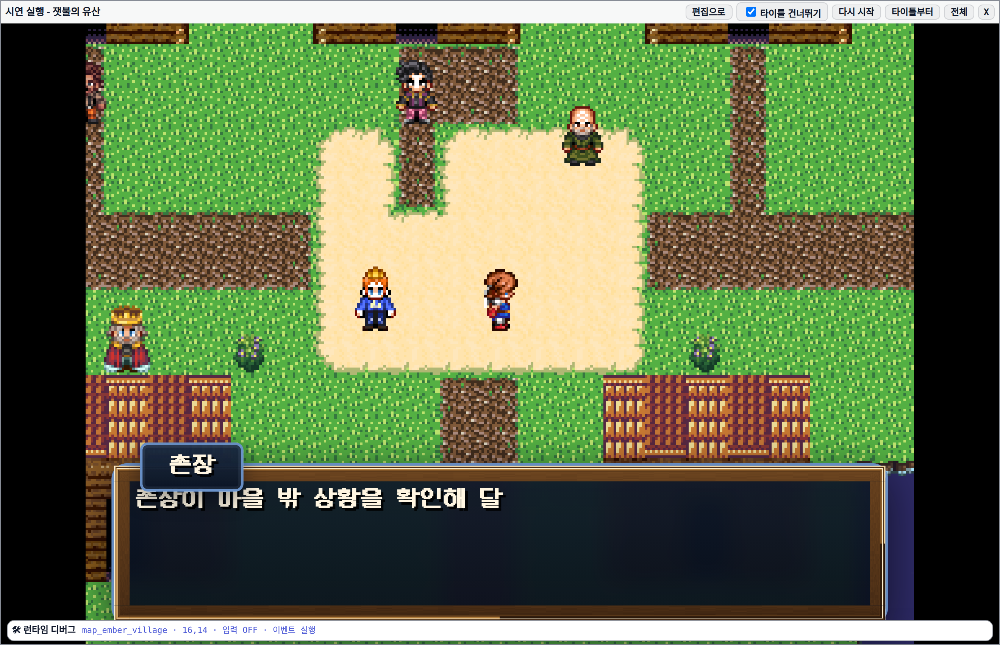
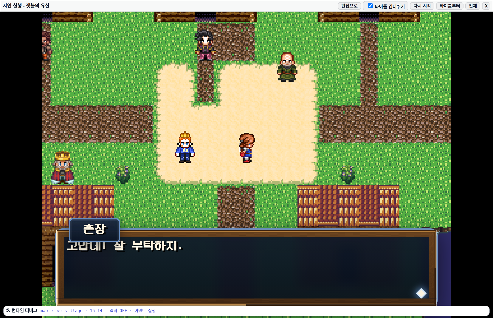

아무 곳이나 클릭 · ESC 로 닫기
저작 도구가 만든 데이터가 실제 런타임에서 눈에 보이는 결과로 이어지는지를 브라우저 자동화로 확인한 기록입니다. 전투 페이즈는 화면에 렌더된 대사로, 퀘스트 수락은 런타임 스위치 전이로 증명했습니다.
먼저 데이터가 정말 저장됐는지 확인합니다. 트룹 전투 이벤트 패널에 1차 각성 · 광폭화 두 페이지가 탭으로 잡혀 있고,
1차 각성은 enemyHpBelow 70 + 1회만 발동으로 저작돼 있습니다.

enemyHpBelow, 이하 % 70, 1회만 발동 체크됨.
상단 후속 연출 있음 배너는 이 페이지 뒤에 실행 커맨드가 더 있음을 알려줍니다.
simulate_battle로 phaseCoverage의 firedRuns를 확인하세요.”
이 보고서의 나머지는 그 확인 과정입니다.실브라우저에서 전투를 열고 UI 버튼(공격 → 타깃)을 실제로 눌러 진행했습니다.
런타임 tick을 코드로 돌리지 않고 battleDom이 스스로 프레임을 굴리게 두고, Node 쪽에서 화면 문자열을 폴링해 대사가 렌더될 때까지 기다립니다.



| 페이즈 | 저작 임계 | 발동 시 HP | 라운드 | 렌더된 대사 | 판정 |
|---|---|---|---|---|---|
troop_dragon_phase11차 각성 |
≤ 70% | 62% | 3 | 제법이군… 인간치고는. | 확인 |
troop_dragon_phase2광폭화 |
≤ 30% | 27% | 7 | 끝이다! 재로 만들어 주마! | 확인 |
requestAnimationFrame과
battleDom의 200ms setInterval이 굶어 메시지창 DOM이 갱신되지 않습니다.
그때 잡힌 “페이즈 대사”는 이전 프레임에 남아 있던 커맨드 프롬프트(>아린은 무엇을 할까?)였습니다.
타깃 클릭도 겹쳐 있는 커맨드 메뉴에 가로채여 좌표 클릭이 통하지 않아, DOM click()으로 바꿨습니다.단발 성공이 우연이 아닌지 보려고 영웅 레벨 4종 × 30판을 시뮬레이션했습니다. 승률은 레벨에 따라 크게 흔들리지만(40% → 100%), 페이즈 발동은 거의 모든 판에서 유지됩니다.
| 영웅 Lv | 표본 | 승률 | 평균 턴 | 1차 각성 발동 | 첫 라운드 | 광폭화 발동 | 첫 라운드 |
|---|---|---|---|---|---|---|---|
| 1 | 30 | 40% | 2.97 | 30/30 | 0 | 29/30 | 1 |
| 3 | 30 | 96.7% | 2.97 | 30/30 | 0 | 30/30 | 1 |
| 5 | 30 | 100% | 2.50 | 30/30 | 0 | 30/30 | 1 |
| 8 | 30 | 100% | 2.00 | 30/30 | 0 | 30/30 | 0 |
Lv1에서 광폭화가 29/30인 건 한 판이 페이즈 임계 전에 전멸로 끝났기 때문입니다. Lv8은 화력이 높아 두 페이즈가 같은 라운드(0)에 몰립니다 — 연출 간격을 벌리고 싶다면 여기서 조정 판단이 나옵니다.
맵은 캔버스라 DOM에서 읽을 대사 텍스트가 없습니다. 그래서 상태 증거는 runtime-state-json에서,
화면 증거는 스크린샷에서 각각 가져왔습니다.

map_ember_village, 플레이어 (16,14) · 기버 (17,14).
입력 OFF · 이벤트 실행으로 바뀜.
sw_mayor_errand_started가 ON.break하고,
기버 쪽으로 방향을 돌리지 않은 채 Enter를 눌러 아무 일도 일어나지 않았습니다.
컴파일된 이벤트는 정면 접촉이 필요합니다 — 오른쪽을 한 번 눌러(이동은 NPC에 막힘) 방향만 맞춘 뒤 상호작용하도록 고쳤습니다.| # | 종류 | 내용 |
|---|---|---|
| 1 | move | (17,13)로 이동 |
| 2 | interact | 촌장에게 말 걸기 |
| 3 | choose | 선택지 0번 |
| 4 | expect | sw_mayor_errand_started ON |
| 5 | move | (18,15)로 이동 — 마을 밖 |
| 6 | expect | sw_mayor_errand_step0 ON |
quest verify 성공 mayor_errand (6/6 steps)
증거의 반대편도 확인했습니다. 검증을 건너뛰거나 데이터가 깨진 상태에서 완료를 시도하면 도구가 막아섭니다. 아래는 실제로 재현한 거부 메시지입니다.
트룹 '붉은 드래곤'의 페이즈 2개가 실제로 뜨는지 확인하지 않았습니다 — simulate_battle로 phaseCoverage를 확인한 뒤 완료하세요.
30판 시뮬 동안 한 번도 발동하지 않은 페이즈 page_never — 조건이 도달 불가합니다(HP 임계가 너무 낮거나 라운드 조건이 전투 길이보다 깁니다).
'mayor_errand'는 컴파일 메타만 있고 그래프가 없어 완주 검증을 할 수 없습니다 — define_quest로 노드를 등록한 뒤 verify_quest로 확인하세요.
완주 실패 — step 1: sw_mayor_errand_step0 기대 ON, 실제 OFF. 기버 대화(sw_mayor_errand_started) 노드가 없으면 뒤 단계 이벤트가 아무것도 하지 않습니다.
lint error 1건 — mayor_errand/reach-outskirts 완료 조건 S14=on에 write site가 없습니다.
빈 페이지는 런타임이 레거시 폴백(기본 메시지)으로 빠져 저작 의도가 사라집니다 — text/setSwitch/m2Command 중 최소 1개를 넣으세요.
enemyHpUnder를 알 수 없습니다 — 전투 전용 kind: turn, onRound, everyRound, enemyHp, enemyHpBelow, actorHp, enemyTurn, actorTurn, actorCommand.
조건이 참인 동안 무한 반복 발동합니다(같은 대사가 도배됩니다). span:"battle" 또는 runOnce:true로 1회성으로 만드세요.
atHpPercent는 내림차순이어야 합니다: phases[0]=30% → phases[1]=70%. 올라가면 페이즈가 동시에 발동하거나 영원히 안 뜹니다.
enrageStateId: state_nope를 찾을 수 없습니다 — upsert_state로 먼저 만들고 연결하세요.
troop.battleEventPages는 upsert_troop으로 쓸 수 없습니다(무검증 저장 차단). author_boss_phases / upsert_troop_battle_page를 쓰세요 — 조건·커맨드·무한반복을 검증합니다.
시뮬로 phaseCoverage를 확인하고 verify_quest가 6/6으로 통과한 상태에서는 완료가 허용됩니다.
페이즈 스크린샷은 전투 장면이 마을 맵 위에 겹쳐 보입니다. 장면이 플레이 창 body에 마운트되기 때문인데,
사실 그대로지만 화면이 다소 산만합니다. 원하시면 두 컷을 battle-scene 요소로 잘라 프레이밍을 좁힐 수 있습니다.